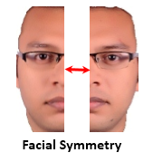
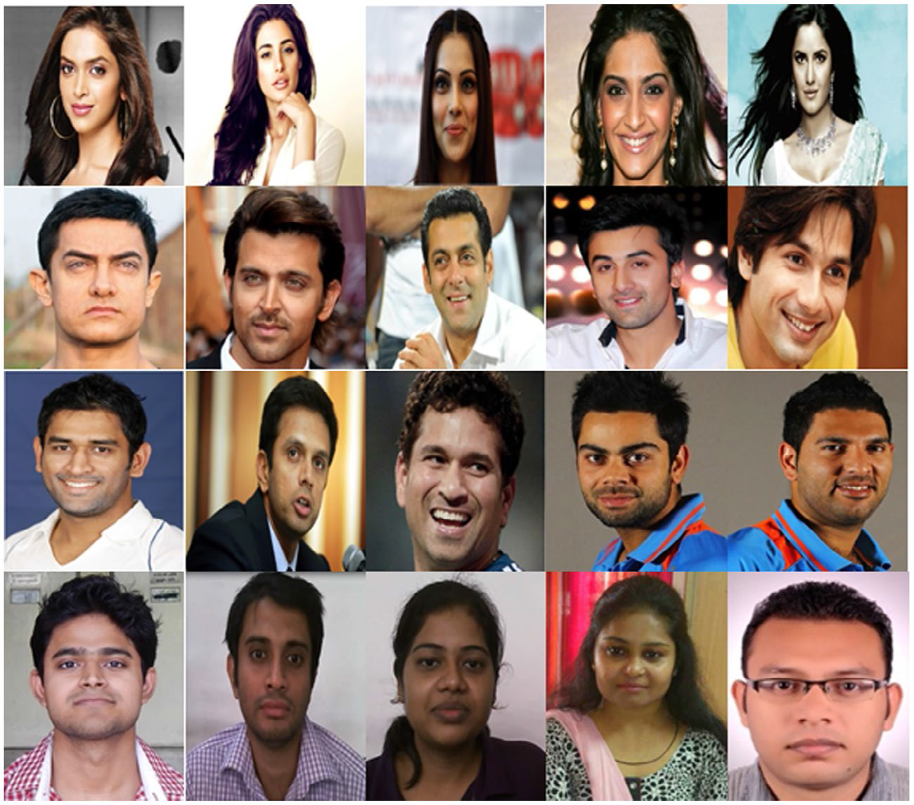
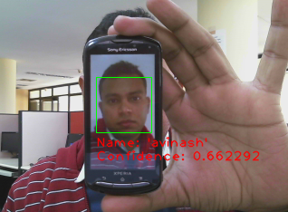

Research Interests
- Deep Learning/Machine Learning
- Computer Vision
- Natural Language Processing
- Human Robot Interaction
Industry Projects
-
Email Classification
Techniques:POS Taggers, Named Entity Extraction, Data Mining
Tools:Python, NLTK, Stanford NER, SQL
The system is designed to extract particular values from the email. There are three parameters such as field type, background, context are needs to be configured in order to extract the particular field values. In order to define the field type, we have used Stanford and NLTK named entity recognition. Field types helps us to localize the organization, person name, location etc. in the sentence. Context is used to find the relevant value, if a field have multiple instance of the same field type. For example there are two organization in the same sentence, context guides us to pick up the right one. Background is a check, if a field can have only certain allowed values, it can be used to check whatever the value retrieved by the system is correct or not.
-

-

Clipart Recognition
Techniques:Convolutional Neural Network
Tools:Python, TensorFlow, Keras
-
Handwritten Digit Recognition
Techniques:Convolutional Neural Network
Tools:Python, TensorFlow, Keras
-
Relative Page Extractor: An approach for document colouring
Techniques:POS Taggers, Named Entity Extraction, Data Mining
Tools:Python, NLTK, Stanford NER
Relative page extractor used to extract the relevant pages from the document. The problem is defined such as: we have a magazine who have different sections such as politics, bollywood, cricket and finance. We have to extract only those pages where cricket news lies. A training module is created which requires the training samples (the document) and the page number where the particular section lies. The system utilizes the Natural Language Processing and Machine Learning to identify particular features of the page. Later these features are utilized to find the match with the other pages of the document. Based on the matching an score is calculated which defines the colour score of that page. We have defined a criterion function to estimate the relative pages.
-
A KYC Verification System
Techniques:POS Taggers, Named Entity Extraction, Data Mining
Tools:Python, NLTK, Stanford NER
The designed system checks for the negative news about the given entity(person/organization) in the given document. In a document, there are only few sentences which belongs to the given entity. Hence, here the challenge is to find the relevant sentences for the given entity. We have created a Anaphora Resolution framework to construct the relative sentence set and later the sentiment analysis if performed to find out the sentiment about the entity. We have utilized the named entity recognition and POS taggers to establish the linking between the relative sentences while TextBlob library is used to estimate the sentiment.
Academic Projects
-

Face is the most frequently used biometric trait after fingerprint. Its applicability made it popular in different areas such as Human Robot Interaction (HRI), Security Authentication, and Surveillance to name a few. Face recognition concept is based on two major blocks, training and testing. Usually training is done offline while testing is performed in real time scenario. As the size of the database increases, the recognition rate (time taken by system to recognize) increases. The rate of recognition is directly proportional to the size of the database and the dimension of the images. Human faces have the vertical symmetry; hence we utilized this feature and proposed a half way face recognition approach. Experimental verification on both the full faces and the half faces shows that half faces are also sufficient for recognizing the person. For verifying the efficiency of the approach, we have applied PCA (Principal Component Analysis) on both, the full faces and half faces, and have found that in both the cases, accuracy is almost same. But the recognition rate of half faces is just the half of the full faces.
-

This paper demonstrates the sketch drawing capability of NAO humanoid robot. Two redundant degrees of freedom elbow yaw (RElbowYaw) and wrist yaw (RWristYaw) of the right hand have been sacrificed because of their less contribution in drawing. The Denavit-Hartenberg (DH) parameters of the system has been defined in order to measure the working envelop of the right hand as well as to achieve the inverse kinematic solution. A linear transformation has been used to transform the image points with respect to real world coordinate system and novel 4 point calibration technique has been proposed to calibrate the real world coordinate system with respect to NAO end effector.
-

The strength of the NAO humanoid robot is discussed with several challenges in the arena of human portrait and sketch drawing. These challenges include extracting feature points from the input image, defining these points with respect to end effector, finding the inverse kinematics solution and designing a visual feedback system. This paper mainly addresses the fundamental issue of defining a relationship between the points of the image plane and NAO end effector position. This relationship enables NAO to perceive points of image plane with respect to its body coordinate system. Three different techniques based on the principles of fundamental matrix, pseudo inverse and Artificial Neural Network based regression analysis are applied to handle the calibration difficulties on NAO robot. A comprehensive study on sample points collected fromNAOend effector position and corresponding image points has been made to understand the effectiveness of each technique. The degree of performance ability of each technique has been measured using time complexity, and mean square error metrics.
-

The visual perception of eyewitness plays a vital role in criminal identification scenario. It helps law enforcement authorities in searching particular criminal from their previous record. It has been reported that searching a criminal record manually requires too much time to get the accurate result. We have proposed a query-based approach which minimises the computational cost along with the reduction of search space. A symbolic database has been created to perform a stringent analysis on 150 public (Bollywood celebrities and Indian cricketers) and 90 local faces (our data-set). An expert knowledge has been captured to encapsulate every criminal’s anatomical and facial attributes in the form of symbolic representation. A fast querybased searching strategy has been implemented using dynamic decision tree data structure which allows four levels of decomposition to fetch respective criminal records. Two types of case studies - viewed and forensic sketches have been considered to evaluate the strength of our proposed approach. We have derived 1200 views of the entire population by taking into consideration 80 participants as eyewitness. The system demonstrates an accuracy level of 98.6% for test case I and 97.8% for test case II. It has also been reported that experimental results reduce the search space up to 30 most relevant records.
-

The recent literature on face recognition technology discusses the issue of face spoofing which can bypass the authentication system by placing a photo/video/mask of the enrolled person in front of the camera. This problem could be minimized by detecting the liveness of the person. Therefore, in this paper, we propose a robust liveness detection scheme based on challenge and response method. The liveness module is added as extra layer of security before the face recognition module. The liveness module utilizes face macro features, especially eye and mouth movements in order to generate random challenges and observing the user's response on account of this. The reliability of liveness module is tested by placing different types of spoofing attacks with various means, like using photograph, videos, etc. In all, five types of attacks have been taken care of and prevented by our system. Experimental results show that system is able to detect the liveness when subjected to all these attacks except the eye & mouth imposter attack. This attack is able to bypass the liveness test but it creates massive changes in face structure. Therefore resultant unrecognized or misclassified by the face recognition module. An experimental test conducted on 65 persons on university of Essex face database confirms that removal of eye and nose components results 75% misclassification.
-

In India like many other countries, the crimes especially against women are rising. One of the many reasons perhaps is the low conviction rate. The initial stage of criminal investigation starts with the exploration of evidences and eyewitnesses. An eyewitness can act as a guide to trace out the suspect. Her/his perception about the suspect can be useful to identify the criminal. Based on the descriptions of the eyewitnesses normally a manual sketch is prepared and released in the Newspapers which most of the times is vague and ambiguous and hence ineffective. Therefore, a robotic framework has been proposed in this paper to help Police to identify criminals using the imprecise knowledge about the subject. The designed robotic system interacts with the eyewitness by asking several questions about the suspect such as age, height, her/his facial shape and size etc., and then making a guess about her/his face. A human face can be considered as the combination of various macro facial features such as eye. Eyebrows, face shape, lip shape, nose type etc. Although these features vary from person to person but their combination makes a human face unique. An experimental study on 113 Indian Bollywood celebrities, 37 Indian cricketers and 40 persons from Robotics and Artificial Intelligence Laboratory of Indian Institute of Technology Allahabad, India has been performed. The system is able to identify the criminal (here pseudo criminals) if it exists in the database. This system can be useful at the initial stage of investigation where we don't have any knowledge about the criminal.